CFD — Computational Simulations
The full CFD workflow, from geometry and meshing to solver setup, turbulence modelling, post-processing and comparison with reference and analytical data.

What I did
As part of my engineering studies I built CFD projects in OpenFOAM for external and internal turbulent flows. I studied a NACA 4415 airfoil and a turbulent channel with a contraction, using different RANS turbulence models to assess their influence on the results.
External aerodynamics
Flow around a NACA 4415 with RANS models, evaluating lift, drag, pressure and flow field.
Internal flow
Turbulent flow and pressure losses through a channel, including a mesh sensitivity study.
Turbulence modelling
Spalart–Allmaras, k-ε and k-ω compared across both cases.
Post-processing & validation
Wall y+, mesh sensitivity, and comparison with reference and analytical data.
NACA 4415 airfoil
The first case studied the aerodynamic behaviour of a NACA 4415 with RANS simulations, comparing predictions from different turbulence models.
Domain & mesh
The airfoil sits in a domain with boundary conditions chosen to reproduce the intended external flow while leaving enough space around the body. An O-type mesh gives suitable resolution near the wall and in the boundary layer, with particular attention to near-wall refinement.
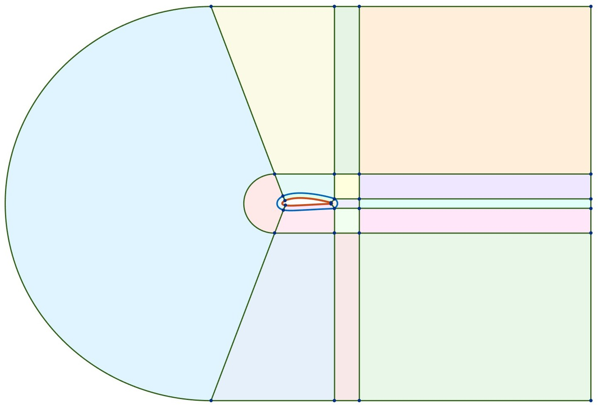
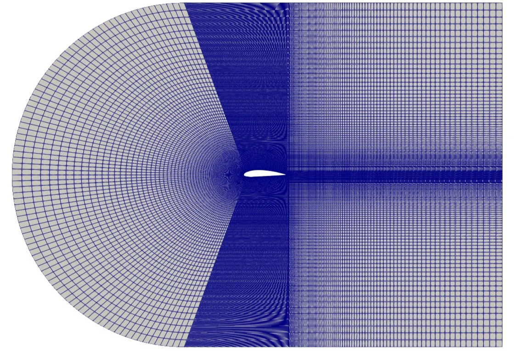
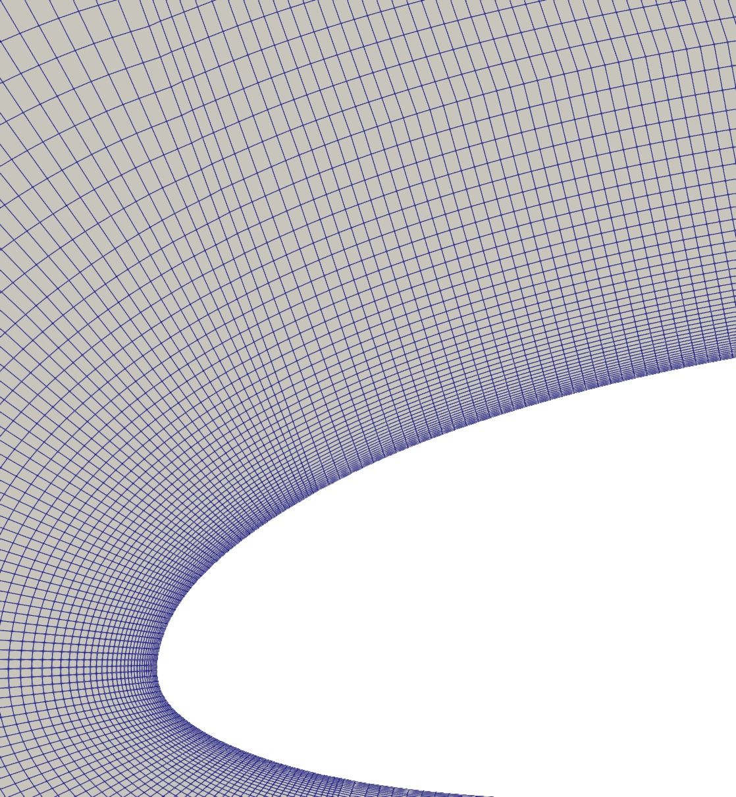
Wall y+ & near-wall treatment
Wall y+ was used to judge whether the mesh suits the chosen wall treatment: wall functions versus wall-resolved.
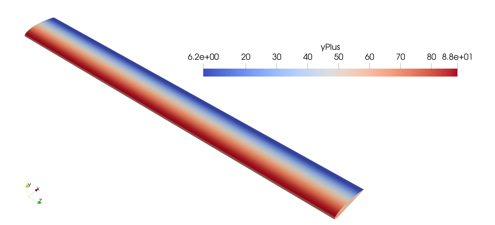
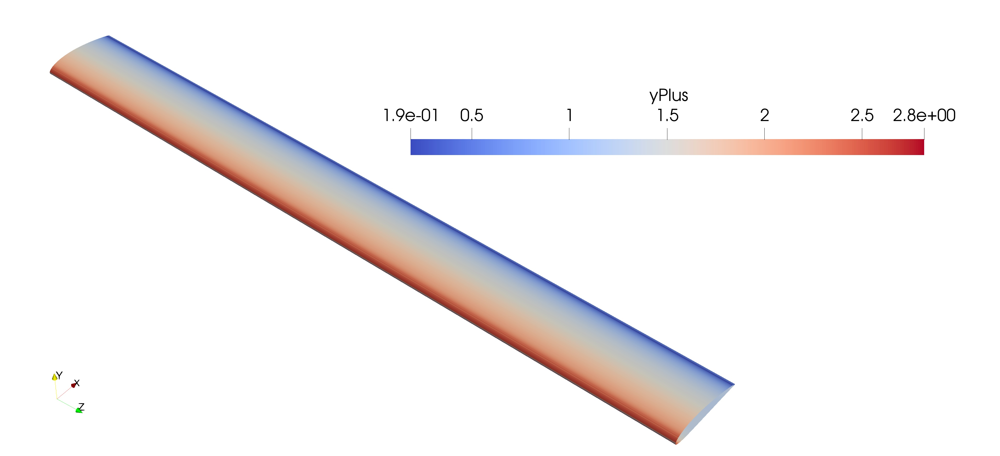
Turbulence models & results
Spalart–Allmaras, k-ε and k-ω were applied to the same problem to see their influence on lift, drag, pressure distribution and flow field.
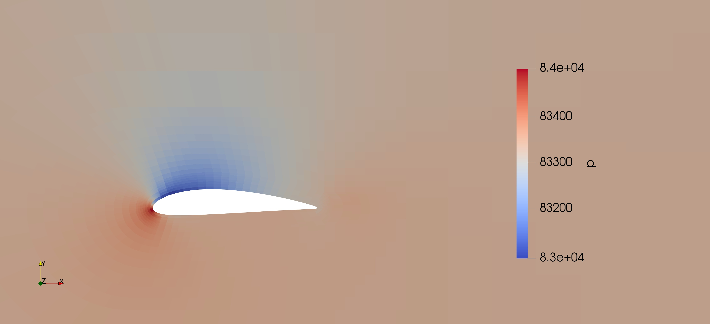
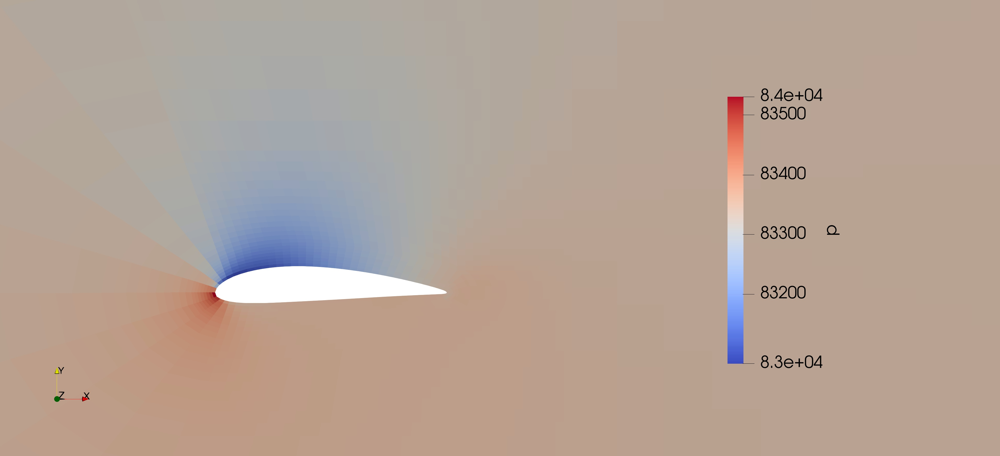
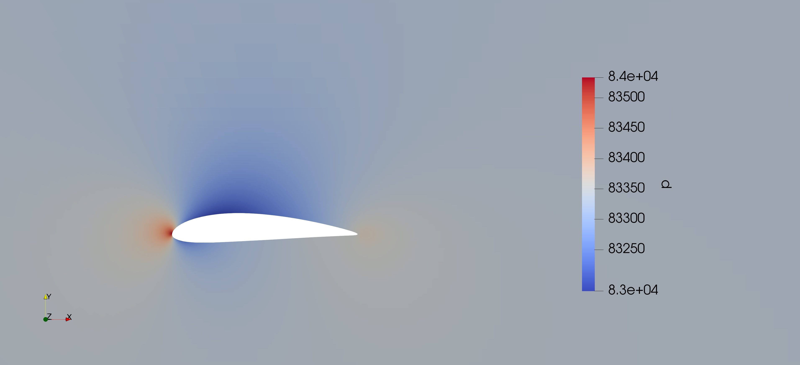
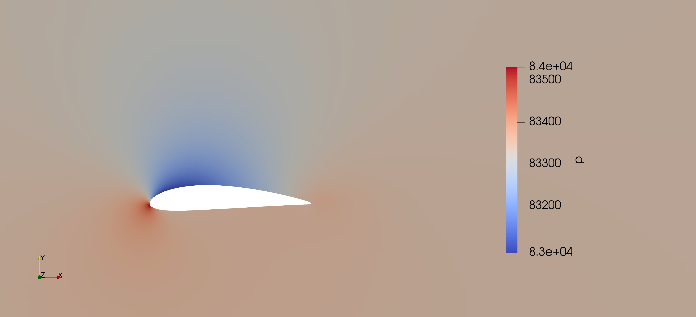
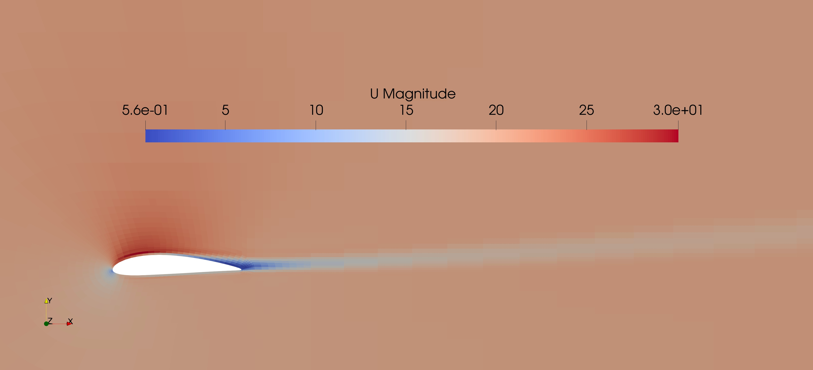
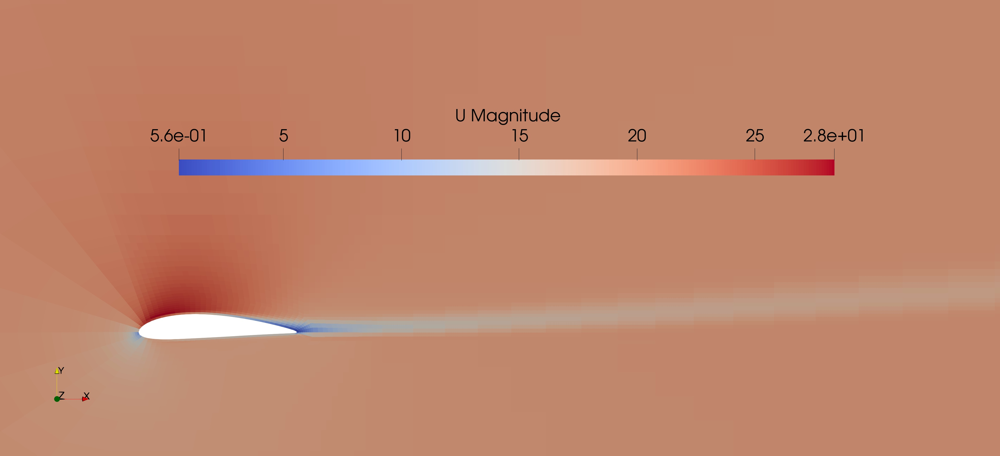
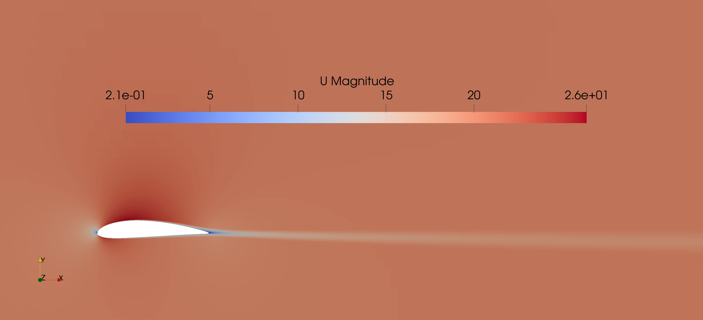
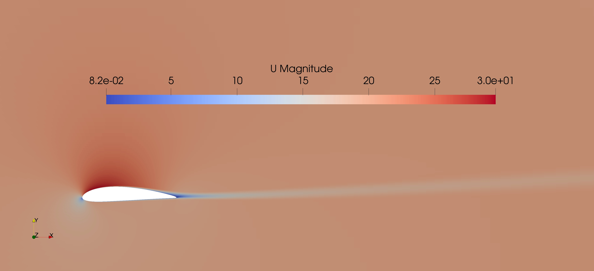
Lift & drag convergence
Lift and drag coefficients were compared across turbulence models, mesh refinement levels and angles of attack, and against reference data.
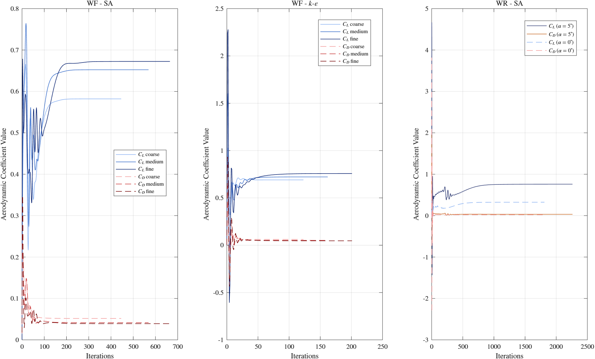
Turbulent internal channel flow
The second case analysed turbulent flow and pressure losses in an internal channel with a contraction, studying the effect of mesh resolution and turbulence model.
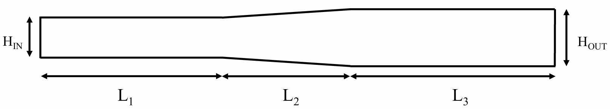
Mesh sensitivity
Different resolutions were compared to check whether further refinement significantly changed the solution.
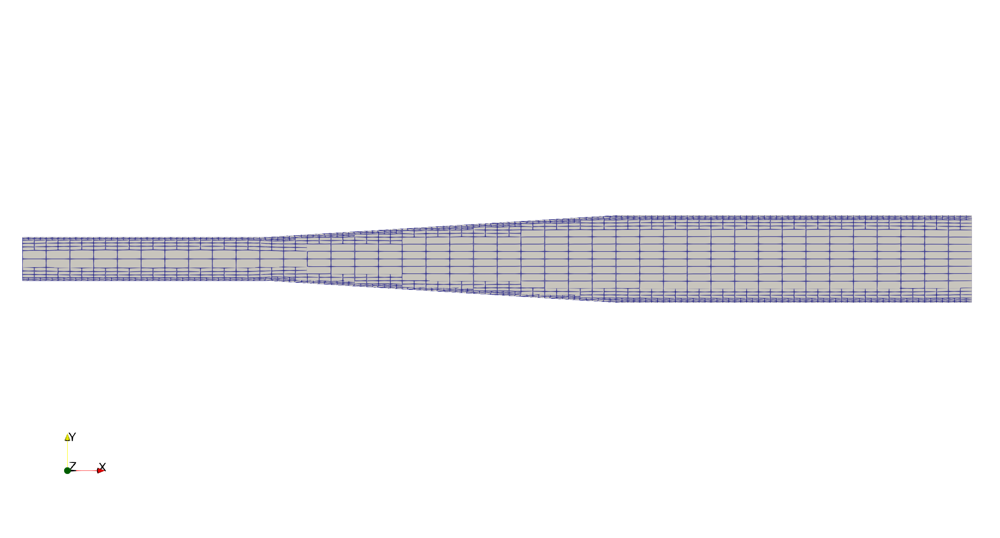
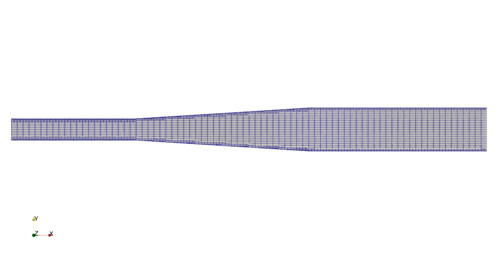
Velocity & pressure fields
The same three RANS models were run under the same flow conditions. Velocity profiles across the channel were extracted and compared with reference and analytical behaviour.
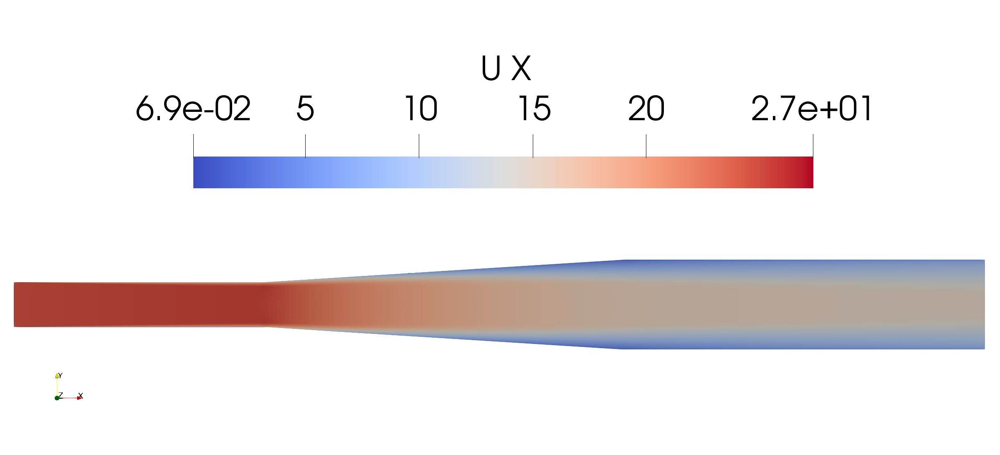
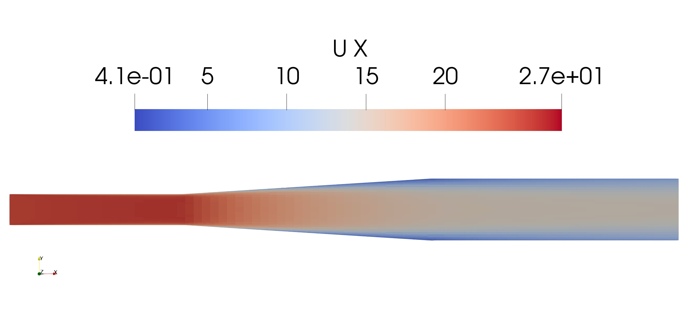
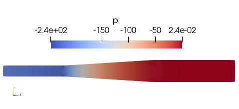
Pressure drop
Pressure drop across the channel was evaluated as a key performance parameter and compared with reference values to assess the effect of turbulence model and mesh resolution.
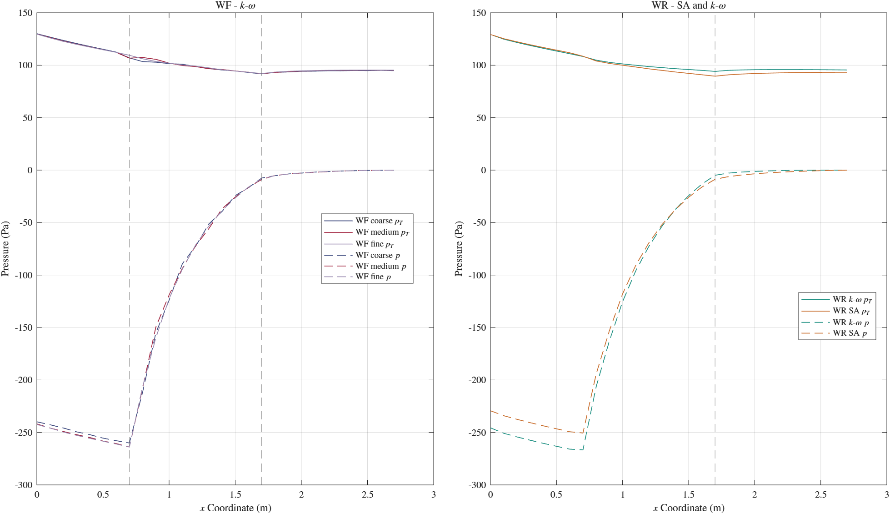
Computational comparison
Together the two cases show how mesh and turbulence-modelling choices shape numerical results.
- Mesh
- Airfoil: an O-type mesh with attention to near-wall resolution and wall y+. Channel: several mesh resolutions in a sensitivity study.
- Turbulence models
- The same three RANS approaches (Spalart–Allmaras, k-ε, k-ω) across external and internal flow.
- Results & validation
- Airfoil: lift, drag, pressure, velocity. Channel: velocity, pressure, pressure drop. All compared with reference or analytical behaviour.